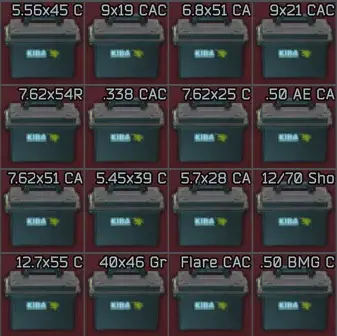
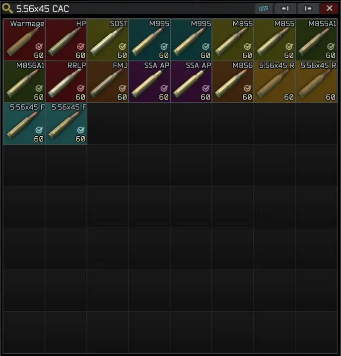
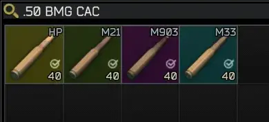

Caliber Split Ammo Cases
- Downloads
- 9,121
- Favourites
- 17
- Mod lists
- 24
Adds procedurally generated ammo cases split by caliber, adapting automatically to the mods and ammunition available on your server.
Choose between two generation modes: a full case for a single caliber or columns per ammo type.
A detailed config file allows you to change the mode and customize sizes of the case.
Features
- Automatically generates cases for all ammunition in the game (including modded ammo, 40×46 grenades, and even flares)
- Two modes to choose: one case per caliber or column per ammo type (configurable)
- Cases can be added to traders: Peacekeeper (USD), Ref (GP Coin), Skier (EUR), Jaeger (RUB), or Prapor (barter)
- Config options for background color, width, height and price of cases
Compatibility
Fully compatible with all mods that add ammo to the game. Load this mod after all mods that are adding new ammo for proper function.
For best results (correct naming and filtering out invalid/unneeded calibers), review the config file.
Credits
Part of typescript codebase by GroovypenguinX
Based on idea from ragnaroks-SPTarkovAmmoCases



Version
2.0.2
- Resolved load order conflict with Amonya, now bullet variants are being correctly added to Ammo Cases
- Added config option “UseAmonyaTrader” which will overwrite trader, to which cases are added, with Amonya
- Added config option “MinimumBulletsInCaliber” which will not allow generating cases for caliber with less than (default) 2 bullets in it
- Removed 30x29mm and 20x1mm calibers from “BadCalibers” config
- Added missing caliber information for Caliber20x1mm and calibers from WTT-Content Backport, WTT- Armory and Definitive Weapon Variants
Version
2.0.1
Updating: Don’t remove previous files, replace existing files!
- Fixed config option of adding Cases to Prapor for barter
- Extended config functionality
Version
2.0.0
- Updated to C# - SPT 4.0 compatible
- Added cases to Item Case and THICC Item Case filters
Version
1.0.1
IMPORTANT: IF YOU ARE UPDATING, PLEASE ONLY UPDATE AND REPLACE FILES IN “src” FOLDER
- Release for 3.11. Backported fixes from mod v2.0
- Added cases to Item Case and THICC Item Case filters
- Fixed 9x18 case
Version
1.0.0
No description was available in the snapshot.